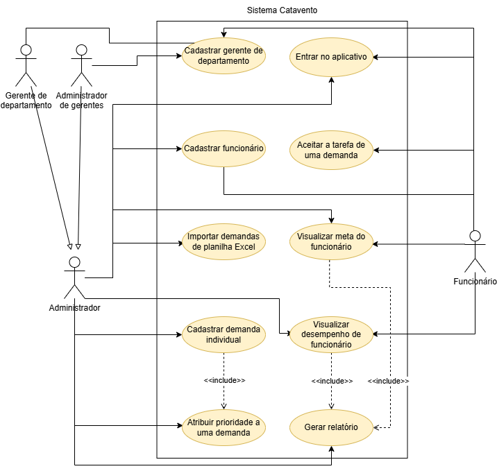
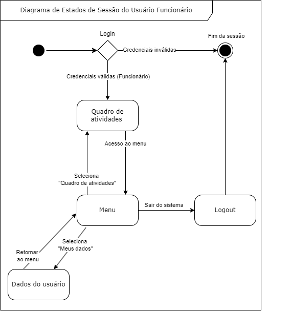

DOCUMENTO DE ARQUITETURA
Histórico de Revisões
| Versão | Data | Descrição da Alteração | Nome(s) Integrante(s) |
|---|---|---|---|
| 0.1 | 07/12/2024 | Início do documento | Henrique Bernardes |
| 0.2 | 07/12/2024 | Redação das definições | Leticia Higa |
| 0.3 | 08/12/2024 | Redação da justificativa e detalhamentos | José Augusto |
| 0.4 | 09/12/2024 | Redação inicial de visão de casos de uso | Pedro Henrique |
| 0.5 | 13/12/2024 | Redação inicial de visão de implantação | Maria Samara |
| 0.6 | 13/12/2024 | Redação inicial da visão de implementação | José Augusto |
| 0.7 | 15/12/2024 | Redação das metas e restrições arquiteturais. | Leticia Higa |
| 0.8 | 16/12/2024 | Redação visão de implementação | Daniel Fernandes |
| 0.9 | 16/12/2024 | Redação inicial restrições adicionais | Maria Samara |
| 0.10 | 17/12/2024 | Redação da visão lógica | Danniele e José Augusto |
| 0.11 | 17/12/2024 | Redação visão de implementação | Daniel Fernandes |
| 0.12 | 17/12/2024 | Redação das restrições adicionais | Gabriela Dourado |
| 0.13 | 18/12/2024 | Complementando a visão de implementação e revisando | Mariana Pereira |
| 0.14 | 18/12/2024 | Revisando e reestruturando os tópicos de metas e restrições arquiteturais e restrições adicionais | Mariana Pereira |
| 1.0 | 18/12/2024 | Revisão final | José Augusto |
| 1.1 | 21/12/2024 | Menções adicionadas sobre a implantação do app em computadores Windows | José Augusto |
Autores
| Matrícula | Nome | Descrição do Papel Assumido na Equipe | % Contribuição ao trabalho |
|---|---|---|---|
| 222008459 | Daniel | Desenvolvedor Frontend | 11% |
| 231012058 | Danielle | Desenvolvedora Frontend | 11% |
| 231026821 | Gabriela | Desenvolvedor Backend | 11% |
| 231026429 | José | Desenvolvedor Backend | 12% |
| 231012272 | Leticia | Desenvolvedor Frontend | 11% |
| 222037577 | Maria Eduarda | Desenvolvedora Backend, analista de qualidade | 11% |
| 231027005 | Maria Samara | Desenvolvedora Frontend | 11% |
| 232029210 | Mariana | Desenvolvedora Frontend | 11% |
| 231026545 | Pedro | Desenvolvedor Backend, Banco de Dados | 11% |
1. Introdução
1.1. Propósito
Este documento descreve a arquitetura do sistema sendo desenvolvido pelo grupo 4 – Runa Fehu – na disciplina de MDS – Métodos de Desenvolvimento de Software – edição do segundo semestre de 2024, Gestão Catavento, buscando fornecer uma visão abrangente do sistema para quaisquer interessados, sejam eles desenvolvedores, testadores e demais. O objetivo principal deste documento é apresentar as decisões arquiteturais, os componentes do sistema, suas interações e tecnologias utilizadas para facilitar o entendimento do projeto, auxiliar na implementação e garantir a qualidade do desenvolvimento.
1.2. Escopo
O detalhamento completo do escopo se encontra no documento de visão. Porém, resumidamente, o sistema a ser desenvolvido trata-se de um aplicativo voltado para tablets android, com foco em auxiliar as demandas da empresa Catavento, que vende bolos fakes. O aplicativo para a loja de bolos tem como objetivo otimizar a comunicação e organização das tarefas entre os membros da equipe. Inicialmente, o foco está em facilitar o gerenciamento das atividades internas da equipe por meio de uma lista de tarefas compartilhada em tempo real, utilizando o Supabase para sincronizar informações entre os dispositivos. As funcionalidades principais incluem a criação, edição e exclusão de tarefas, categorização de status (como "Pendente", "Em andamento" e "Concluído"), e controle de permissões, garantindo que apenas usuários autorizados possam realizar determinadas ações. Ele será implementado utilizando as tecnologias Flutter, para o frontend, Dart, para o backend e o Supabase como banco de dados, garantindo eficiência, escalabilidade e boa experiência do usuário.
2. Representação Arquitetural
2.1. Definições
O sistema seguirá uma arquitetura BLoC (Business Logic Component), uma arquitetura padrão amplamente utilizada no Flutter. Essa arquitetura separa as regras de negócio da interface do usuário, tornando o código rápido, fácil de testar e reutilizável. O BLoC utiliza streams (fluxos de dados) para gerenciar a comunicação entre a interface e as regras de negócio. Em geral, a arquitetura é composta por três camadas principais: a interface de usuário, o componente BLoC e a camada de dados.
A interface de usuário é responsável pela renderização e captura das interações, mas não contém lógica de negócios, ela apenas responde aos estados enviados pelos Blocs. O componente Bloc é onde ocorre a lógica de negócios, recebendo os eventos da interface, processando-os conforme as regras de negócios e enviando novos estados para a interface. A camada de dados é responsável por fornecer os dados necessários ao Bloc.
2.2. Justificativa
A arquitetura BLoC foi selecionado pois a divisão dos componentes de software propiciado pela arquitetura ajuda no desenvolvimento e na realização de testes pois diminui o acoplamento e aumenta a coesão do sistema, além de ajudar no gerenciamento de estado da aplicação. Além disso, a arquitetura BLoC foi escolhida por ser bem estabelecida no desenvolvimento de aplicativos Flutter, tendo sido apresentada pela Google, criadora do Flutter, no Google I/O 2018 e posteriormente amplamente adotada por desenvolvedores que utilizam o framework.
Se tratando de testes, a arquitetura BLoC facilita a execução de testes, pois como os blocs que formam a camada lógica são desacoplados da camada de apresentação e de outros blocs testar um bloc específico não apresenta qualquer dificuldade, e como cada operação de um bloc é chamada por eventos específicos com um estado retornado previsível, a interpretação dos testes é intuitiva e a origem dos erros é de fácil identificação.
2.3. Detalhamento
Utilizando a arquitetura BLoC o sistema é dividido em três camadas, uma camada de apresentação, outra de lógica e a última de dados, que são responsáveis respectivamente pela:
- Comunicação com o usuário final, isto é, tanto a parte gráfica quanto o recebimento de inputs;
- Comunicação com as duas outras camadas, a camada de lógica recebe os inputs da camada de apresentação, realiza chamadas a camada de dados e depois passa as informações recebidas, já processadas, para a camada de apresentação;
- Armazenar e disponibilizar os dados do sistema para que a camada lógica possa processar esses dados e enviá-los a camada de apresentação;
No caso do sistema desenvolvido pela equipe, teremos as páginas do administrador e do funcionário na camada de apresentação se comunicando com os blocs de demandas, usuários e autenticação na camada lógica. Por fim a camada lógica se comunicará com camada de dados que é baseada nas APIs do Supabase. As interações entre cada uns dos elementos podem ser observadas na Figura 1 a seguir.
É importante notar que elementos de uma mesma camada não devem se comunicar entre si, a fim de evitar um alto acoplamento, além disso a camada de apresentação não se comunica diretamente com a camada de dados, isto a fim de concentrar a lógica nos Blocs de forma que a lógica seja reusável e mais fácil de manter.
Figura 1: Esquema de Camadas do Sistema

Fonte: autoria própria (2024)
2.4. Metas e Restrições Arquiteturais
As metas e restrições arquiteturais para o sistema incluem diversos aspectos fundamentais para seu desenvolvimento e operação. Entre as metas arquiteturais, destaca–se o tempo que respostas, que deve ser de até 2 segundos para garantir uma experiência fluida para gerentes e funcionários, especialmente no acompanhamento em tempo real das demandas. Essa agilidade é essencial para evitar atrasos e desorganização no fluxo produtivo das demandas. Outra meta importante é a disponibilidade, que requer que o sistema deve estar disponível 24 horas por dia, com maior estabilidade durante o horário comercial da empresa, uma vez que a indisponibilidade do sistema pode interromper o fluxo produtivo, prejudicando a visualização e atualização das demandas pelos funcionários.
Além disso, o sistema deve proporcionar visibilidade das etapas, permitindo que as informações sobre o estado de cada etapa da produção dos bolos devem estar acessíveis para todos os funcionários. Essa característica é crucial, pois algumas etapas só podem ser iniciadas após a conclusão de outras, é fundamental que todos os funcionários possam acompanhar o progresso, garantindo a continuidade e eficiência do processo. A facilidade de uso é outro objetivo essencial, exigindo que o aplicativo seja intuitivo e fácil de aprender, permitindo que novos funcionários consigam utilizá-lo com o menor tempo de treinamento possível. Isso é importante porque alguns funcionários podem ter pouca experiência com tecnologia, por isso a interface deve ser simples, acessível e funcional.
Outro ponto relevante é a geração de relatórios automatizados. O sistema deve gerar automaticamente relatórios de desempenho dos funcionários, detalhando o tempo gasto na produção de cada bolo. Esses relatórios deverão ser armazenados em uma página específica do sistema, acessível para consulta pelos gerentes. Esses relatórios permitem um controle mais eficiente do desempenho dos funcionários e auxiliam no monitoramento das vendas e da produção. No que se refere a escalabilidade, o sistema deve ser capaz de suportar o aumento do número de demandas e usuários simultâneos sem comprometer o desempenho. Essa capacidade é essencial para preparar o sistema para o crescimento da empresa e atender a um número maior de processos no futuro. Além disso, a utilização do Supabase possibilita atender a demandas de expansão, como o desenvolvimento de outro aplicativo ou o compartilhamento de dados com clientes para que acompanhem o pregresso do produto, graças a capacidade de reagir a mudanças do banco de dados em tempo real e a compatibilidade com diferentes produtos.
Quantos as restrições arquiteturais, o projeto deve seguir o padrão arquitetural BLoC, que promove uma separação clara entre a interface e a lógica de negócios, aumentando a testabilidade, a manutenção do código e a modularidade. Além disso, o uso do BLoC facilita a escalabilidade do sistema, permitindo implementar novas funcionalidades sem comprometer a estrutura existente. O sistema utilizará o banco de dados Supabase para armazenamento e sincronização em tempo real, que oferece suporte nativo para essas funcionalidades, além de autenticação integradas. O Supabase é compatível com a linguagem Dart e com o framework Flutter, o que facilita a integração e atende às necessidades do sistema para controle dinâmico de demandas e geração de relatórios de desempenho.
Adicionalmente, o sistema deve ser compatível com tablets, pois esses dispositivos são as ferramentas utilizadas no ambiente de trabalho da empresa. Ele também deve permitir a importação da planilha de dados atualmente utilizada pela empresa, o que facilita a transição para o novo sistema, garantindo a continuidade das operações e evitando a perda de informações históricas importantes. Essa funcionalidade também reduz o esforço manual dos funcionários ao integrar dados ao sistema, considerando a grande quantidade de demandas diárias.
2.5. Visão de Casos de Uso (Escopo do produto)
Figura 2: Diagrama de Casos de Uso

Fonte: autoria própria (2024)
O sistema suportará três tipos de usuário: o funcionário; e dois tipos de administrador, sendo o gerente de departamento e o administrador de gerentes.
O administrador, em geral, será capaz de gerenciar demandas individualmente e através de importação de planilha Excel. Ele também será capaz de visualizar o desempenho de funcionários e estabelecer metas. O gerente de demandas será capaz de gerenciar contas de usuário funcionário. O administrador de gerentes, por sua vez, será capaz de gerenciar contas de usuário funcionário e de gerentes de departamento. Adicionalmente, o administrador poderá gerar relatórios de produtividade referentes a determinado período.
O usuário funcionário será capaz de visualizar uma demanda por vez e aceitar a tarefa correspondente a seu departamento. Ele será capaz de visualizar seu progresso em sua própria meta de produção diária, e o seu próprio desempenho (quantidade de tarefas entregues por dia).
2.6. Visão Lógica
O sistema é subdividido nos seguintes módulos: autenticação, gestão de demandas, gestão de funcionários, geração de relatórios e distribuição de tarefas. Cada módulo foi projetado com base em uma lógica que reflete as necessidades da cliente, garantindo que as funcionalidades estejam organizadas de maneira eficiente e fácil de manter.
O módulo de autenticação é responsável por controlar o acesso ao sistema e distinguir os perfis de usuários (administrador e funcionário), bem como atribuir permissões específicas a cada um. Esse módulo foi assim pensado para que apenas os administradores pudessem ter o controle total sobre todas as demandas a serem produzidas no dia, enquanto os funcionários pudessem apenas acessar informações sobre as demandas que eles devem produzir no momento.
O módulo de gestão de demandas, acessível aos administradores, centraliza o controle do processo produtivo. Ele permite o cadastro de novas demandas, o acompanhamento do progresso de cada tarefa na linha de produção e a definição de prioridades. De forma semelhante, o módulo de gestão de funcionários facilita o gerenciamento de perfis de usuário. Este módulo permite que os administradores cadastrem, editem e excluam perfis de funcionários.
O módulo de geração de relatórios reúne informações históricas sobre as demandas concluídas, auxiliando os gerentes na análise do desempenho produtivo. Ele também inclui dados sobre os funcionários, como o tempo médio para conclusão de atividades e o número de tarefas finalizadas diariamente. Por outro lado, o módulo de distribuição de tarefas é acessível apenas aos funcionários. Nele, os usuários visualizam as tarefas que precisam executar e têm acesso apenas às etapas de produção em que estão diretamente envolvidos, sem acesso às demais etapas do processo.
Quanto às interfaces do sistema, o módulo de autenticação funciona como a camada inicial, determinando as permissões de acesso com base no perfil do usuário. Os administradores têm acesso aos módulos de gestão de demandas, gestão de funcionários e geração de relatórios, enquanto os funcionários interagem exclusivamente com o módulo de distribuição de tarefas. De forma integrada, os módulos se comunicam para garantir a sincronia das informações. O módulo de gestão de demandas alimenta o módulo de distribuição de tarefas, que atribui as atividades específicas aos funcionários. Informações geradas nesse processo são enviadas aos módulos de gestão de funcionários e de geração de relatórios para atualização de dados. Assim, a interação entre esses módulos alimenta um fluxo contínuo de informações.
A seguir, serão apresentados dois diagramas de estados que descrevem o fluxo de sessão de um usuário funcionário e um usuário administrador dentro do sistema, detalhando as possibilidades de navegação de cada um, desde o início até o término de sua sessão. Ambos os processos iniciam com a autenticação do usuário, que caso bem bem-sucedida, o redireciona para uma página inicial. Da mesma forma, nos dois casos as sessões finalizam quando a autenticação não é bem-sucedida ou o próprio usuário opte por encerrar a sessão.
No diagrama da Figura 3, é possível observar que, após a autenticação, o usuário funcionário é redirecionado para a página de quadro de tarefas, onde ele pode visualizar e interagir com as atividades que lhe foram atribuídas. Além disso, o funcionário tem acesso a um menu que oferece atalhos para realizar o logout ou acessar seus dados pessoais.
Figura 3: Diagrama de Estados de Sessão do Usuário Funcionário

Fonte: autoria própria (2024)
Em seguida, o diagrama da Figura 4 mostra o fluxo de sessão do usuário administrador. Após a autenticação, o administrador é redirecionado para a página principal de administração, que por padrão é a de gestão de demandas. A partir dessa página, o administrador pode acessar diferentes áreas do sistema por meio do menu, incluindo o cadastro e visualização de produtos, a administração de funcionários, a gestão de demandas e o atalho de logout.
Figura 4: Diagrama de Estados de Sessão do Usuário Administrador

Fonte: autoria própria (2024)
O fluxo de atividades da aplicação pode ser dividido em dois, baseados no tipo de usuário, um fluxo para o administrador e o outro para o funcionário. O fluxo de atividades do funcionário envolve simplesmente em iniciar a sessão do seu dispositivo e receber demandas e finalizar demandas recebidas do administrador até que todas sejam completas, o que é mostrado na Figura 5 a seguir
Figura 5: Diagrama de Atividades do Funcionário

Fonte: autoria própria (2024)
O fluxo de atividades do administrador consiste em importar os bolos que serão produzidos durante o dia de uma planilha e, ao decorrer do dia, acompanhar o processo produtivo usando o aplicativo, eventualmente adicionando, editando ou removendo demandas conforme a necessidade. Por fim, o administrador recebe um relatório contendo o tempo médio que os funcionários levaram para fabricar cada produto, com a possibilidade de visualizar o desempenho de funcionários individuais ou do departamento inteiro. Este fluxo é ilustrado na Figura 6 abaixo.
Figura 6: Diagrama de Atividades do Administrador

Fonte: autoria própria (2024)
A comunicação entre os módulos ocorre de forma indireta através de blocs, que são responsáveis por mediar as interações entre a camada de apresentação e a camada de dados. Essa estrutura garante baixo acoplamento entre os módulos, permitindo que cada um opere de forma independente e sem dependências diretas. De forma resumida, qualquer dado necessário para as funções de um módulo é adquirido ou da camada de apresentação ou da camada de dados por meio de objetos da classe Event ou chamadas da Api do Supabase.
Os dados são persistidos localmente pela aplicação nos vários blocs que compõem a camada lógica da aplicação, esses blocs realizam chamadas ao banco de dados baseados em events que são adicionados aos blocs por meio do método add e disponibilizam as informações recebidas por meio da emissão de um State por meio do método emit, no caso de operações que não necessitam de uma nova chamada ao banco de dados, por exemplo quando é apenas necessário apenas filtrar os dados já armazenados, o bloc é responsável por processar os dados armazenados e envia-los a camada de apresentação.
Na figura 7 abaixo é representado uma configuração básica e genérica de como um bloc armazena as informações e as classes utilizadas para a comunicação com a camada de apresentação, note que currentData e data são do tipo DatabaseResponse um nome dado para os dados recebidos do banco de dados que são do tipo List
Figura 7: Diagrama de Classes

Fonte: autoria própria (2024)
2.7. Visão de Implementação
A aplicação terá quatro pacotes principais: Screens, Blocs, Supabase, e Services. A interação com o usuário é responsabilidade das páginas e widgets contidos no pacote Screens que por sua vez depende das classes e funções definidas tanto no pacote Blocs como no pacote Services, que disponibiliza funções para importação de dados vindos de arquivos do dispositivo.
A comunicação com o banco de dados é realizada através da classe Client do pacote Supabase Flutter, uma biblioteca desenvolvida pelo Supabase que permite a realização de requisições para o backend como serviço. Por fim, a comunicação entre a camada de apresentação e o banco de dados é intermediada pelas classes do pacote Blocs que além de simplesmente atuarem como as pontes de comunicação entre o usuário e o banco de dados também guardam em si a lógica de negócios da aplicação. A interação entre esses pacotes e a as classes que os compõem, de forma simplificada, pode ser vista na Figura 8 abaixo. O diagrama ilustra como o pacote Screens interage diretamente com os pacotes Blocs e Services, enquanto o Blocs realiza as requisições ao banco de dados por meio do pacote Supabase. Além disso, destaca-se que Services fornece funcionalidades auxiliares ao Screens, como importação de dados. Essa divisão garante uma arquitetura modular e facilita a manutenção e evolução do software.
Figura 8: Diagrama de Pacotes

Fonte: autoria própria (2024)
2.8. Visão de Implantação
O sistema será implantado em tablets android, por serem dispositivos que unem mobilidade com uma tela que permite o software apresentar mais informações ao usuário. O sistema também será implantado em computadores Windows, utilizados atualmente na empresa Catavento para o controle de demandas.
As tecnologias utilizadas serão o Flutter e o Supabase, o primeiro um framework de desenvolvimento multiplataforma especializado no desenvolvimento mobile baseado na linguagem Dart, linguagem que é compilada em código nativo proporcionando alto desempenho nessas plataformas, e o segundo um backend como serviço com integração nativa com o Flutter e APIs para a comunicação em tempo real com o banco de dados, essencial para o acompanhamento do processo produtivo. Além disso será usado um banco de dados PostgreSQL, que garante a integridade das informações armazenadas e a possibilidade de acesso simultâneo ao banco de dados por vários usuários.
2.8.1. Infraestrutura de Hardware
Para rodar o software, será necessário, como a alternativa pedida pela cliente, um tablet android com 4GB de RAM e conexão Wi-Fi ou um computador Windows, também com conexão a internet. Esses requisitos garantem que o sistema funcione de maneira eficiente e estável.
2.8.2. Tecnologias
O desenvolvimento será realizado utilizando tecnologias modernas. O Flutter, um framework amplamente utilizado no mercado, permitirá o desenvolvimento de aplicações para diferentes sistemas operacionais, como Android e iOS, além de multiplataformas. Ele oferece pacotes de bibliotecas pré-prontas que tornam o desenvolvimento mais ágil e eficiente. Sua popularidade no mercado é atribuída à versatilidade, desempenho elevado e alto grau de personalização.
A linguagem Dart será a base para o desenvolvimento do sistema. Essa linguagem, conhecida por sua eficiência, utiliza a compilação a compilação AOT (Ahead-of-Time), que converte o código diretamente em linguagem nativa, proporcionando alto desempenho em dispositivos móveis, como celulares, tablets e notebooks.
Como solução de backend, será utilizado o Supabase. Desenvolvido para ser escalável, acessível e baseado em código aberto, o Supabase atende às necessidades de desenvolvedores do todos os níveis de habilidade. Sua compatibilidade com o Flutter e a linguagem Dart facilita a integração e permite atualizações de dados em tempo real, um requisito essencial para o gerenciamento eficiente entre os departamentos do cliente.
2.8.3. Banco de Dados
O banco de dados desempenhará um papel crucial na gestão de usuário e autenticação, garantindo proteção contra acessos não autorizados. O sistema contará com diferentes níveis de acesso, divididos entre administradores, gerentes e funcionários, o que assegura maior controle e segurança. Além disso, o banco de dados será projetado para escalabilidade, permitindo que o sistema atenda a novas demandas no futuro. Isso inclui, por exemplo, a possibilidade de desenvolver outros aplicativos ou compartilhar dados com clientes, permitindo que acompanhem o progresso dos produtos em tempo real. Essa escalabilidade é essencial para suportar o aumento no número de demandas e usuários simultâneos, sem comprometer o desempenho do sistema.
2.9. Restrições Adicionais
As restrições negociais e de qualidade do sistema estabelecem diretrizes importantes para o seu desenvolvimento e operação. Uma das principais restrições negocias é a autenticação obrigatória. O software exige que todos os usuários se autentiquem com um nome de usuário e senha, garantindo que cada funcionário tenha um perfil associado às suas funções, com níveis de acesso diferenciados. Perfis como Administrador e Gerente terão acesso a telas e funcionalidades exclusivas. Essa medida é necessária para proteger informações sensíveis da empresa, como registos de pedidos e informações confidenciais sobre clientes e fornecedores. Além disso, evita acessos não autorizados por terceiros, garantindo a conformidade com regulamentos de segurança e proteção de dados.
Entre as restrições de qualidade, destaca-se a usabilidade, que requer que a interface do aplicativo deve ser acessível, intuitiva e amigável, projetada para facilitar a navegação, especialmente para usuários com menos familiaridade com tecnologia. Essa facilidade de uso é crucial para que todos os colaboradores, incluindo adultos mais velhos com pouca experiência tecnológica, consigam operar o sistema sem dificuldades, reduzindo o tempo necessário para treinamento e melhora a produtividade. Outra restrição essencial é a confiabilidade do sistema. Ele deve oferecer alta disponibilidade com um uptime de 99,9% e recuperação rápida de falhas, garantindo que nenhum dado seja perdido em casos de interrupções ou falhas. A confiabilidade é essencial para evitar prejuízos ao negócio, pois o sistema é usado para gerenciar a demanda de produção de bolos. Qualquer interrupção pode comprometer os prazos de entrega, prejudicar a satisfação da cliente e afetar a produtividade da empresa.
No aspeto de portabilidade, o sistema deve ser projetado para funcionar de forma eficaz em dispositivos móveis como tablets, que são amplamente utilizados no ambiente de trabalho da empresa. Essa característica garante que o sistema possa ser acessado em qualquer local dentro do ambiente corporativo. Por fim, a manutenibilidade do código é uma prioridade. O sistema deve ser desenvolvido de forma modular, com documentação clara e boas práticas de programação, facilitando a identificação e correção de falhas ou a adição de novas funcionalidades. Isso é essencial para que o sistema possa ser atualizado regularmente e acompanhar as necessidades crescentes do negócio e mantendo-se relevante e funcional ao longo do tempo.
O aplicativo também deverá ser facilmente instalável e executável em computadores Windows, visto o uso exclusivo do computador pelos gerentes para as atividades de planejamento de quais demandas serão produzidas no expediente. O arquivo de instalação deverá ser suficiente para a implantação do sistema nas máquinas da empresa, de forma que o aplicativo seja implantável sem conhecimento técnico prévio.
3. Bibliografia
ALURA. O que é Flutter? O Framework do Iniciante ao Avançado. 2023. Disponível em: https://www.alura.com.br/artigos/flutter?srsltid=AfmBOorUEUJL41Ic2Su7wjTpL7NKLdhUQ2dYdDMhPqwyBBAVQ-sZlJwe. Acesso em: 13 de dezembro de 2024.
FLUTTER. Flutter architectural overview. 2024. Disponível em: https://docs.flutter.dev/resources/architectural-overview. Acesso em: 13 de dezembro de 2024.
SUPABASE. Auth architecture. 2024. Disponível em: https://supabase.com/docs/guides/auth/architecture. Acesso em: 16 de dezembro de 2024.
DEVIN INTERFACE. A Supabase overview. Disponível em: https://www.devinterface.com/en/blog/a-supabase-overview. Acesso em: 17 dezembro 2024.
WELL. Supabase, uma plataforma de desenvolvimento de aplicativos web. Disponível em: https://leoandrade.net/supabase-uma-plataforma-de-desenvolvimento-de-aplicativos-web/. Acesso em: 17 dezembro 2024.